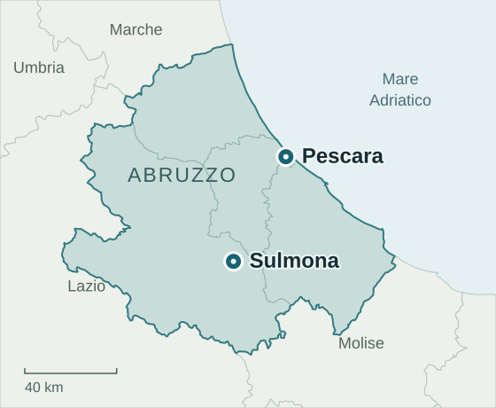

Trasporti programmati
con partenza da Pescara.
Pescara è un punto di partenza dei mezzi in Abruzzo. Il percorso e la disponibilità vengono valutati in relazione a ogni richiesta.
Dalla costa,
verso la tua destinazione.
Visite, dimissioni, appuntamenti ricorrenti e trasferimenti possono partire da questa area, secondo disponibilità.
Pescara e Sulmona sono due città abruzzesi usate per organizzare le partenze dei mezzi. Questa pagina non indica una seconda sede legale né uno sportello aperto al pubblico.
Per valutare il trasporto, indica il comune di partenza effettivo, la destinazione, una data orientativa e le esigenze di mobilità. Il referente concorderà modalità e condizioni prima della conferma.
